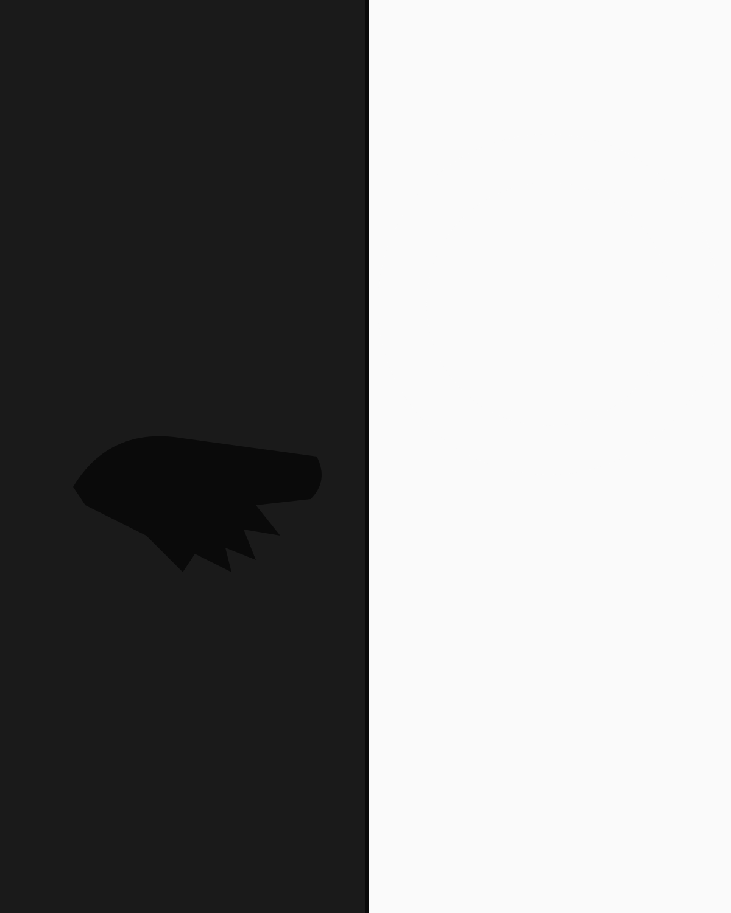

№ 042 · Cyclades · 28 plates
Cyclades, in three visits.
An essay on the white walls and slow afternoons of Tinos. Photographed across three visits, August 2024 — May 2026. Twenty-eight plates, four short captions, one long one.

The wall is the same wall it was in 1972. The light is the same light it has always been. Only the photographer has changed, and only a little, and only in the ways that matter least.
I had spent the morning trying to make a picture of the harbour and giving up on it. The harbour does not want to be photographed. The wall, on the way back, did.


The second visit, six months later.
I came back in April because I had not finished. The light in August was wrong — too high, too white, too sure of itself. April light is hesitant. The wall, by April, had been re-painted. The painter was not the same painter. The colour was three percent yellower. I made eleven pictures of nothing in particular, two of which appear here.

The figure is M. He has been my friend since 2003. He does not like having his photograph taken. He had walked ahead, far enough that I could not call without shouting, and far enough that he could be photographed without noticing.

What was learned, in three visits.
That nothing happens in three visits, except a small accumulation of pictures. That an essay is not built; it is left around long enough to be discovered. That a photograph of a wall is, on a good day, also a photograph of a year, a friendship, a particular afternoon's tiredness, the colour of the painter's coat, and the thing that was almost in the frame and you don't ever see.
Twenty-eight plates remain. Twelve limited editions are available, printed slowly on Hahnemühle Photo Rag, signed and numbered. Reach the studio for the full sequence and pricing.
Available now